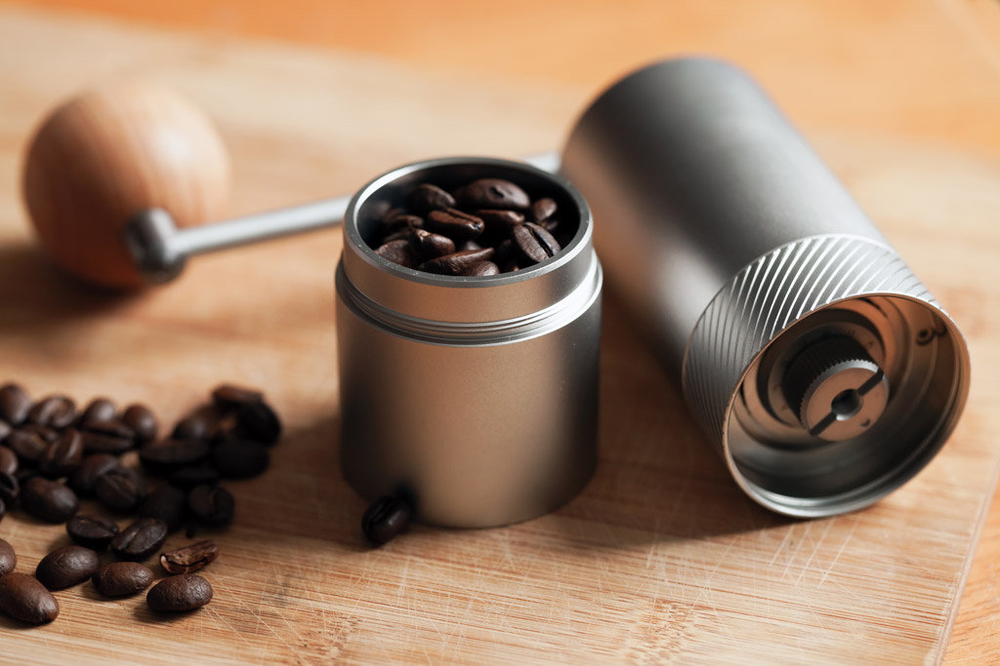
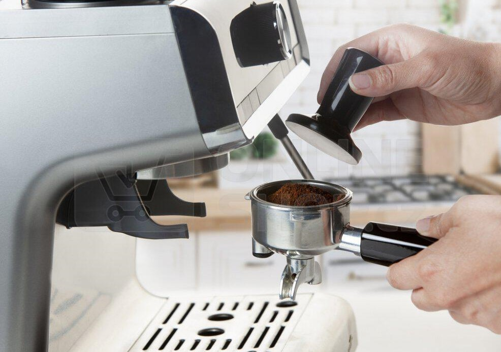

Výroba naší kávy -espresso
Káva krásně voní, má povzbuzující účinky a je zdravá. Bylo by proto škoda nevychutnat si ji v plné
kvalitě.
1. Vše nahřáto
Než začnu espresso připravovat, je důležité mít vše předehřáto. Nezapomínejte na šálky a páku. Pokud
to
kávovar umí, můžete šálky nahřát na kávovaru, v opačném případě můžete použít horkou vodu.
2. Čisté sítko v páci
Než si namelu novou kávu do páky, musím ji vyčistit. K tomu je dobré použít odklepávač na kávu
(knock
box) a baristický štětec. Můžete také použít ubrousky, ale v kavárně by to bylo poměrně
neekonomické.
3. a 4. Čerstvě a přesně namleto
Kávu si melu až těsně před extrakcí. Abych docílil správné extrakce, musím si také odvážit přesnou
dávku.
Mít čerstvě namleto je důležité z důvodu chuti. Dopředu namletá káva ztrácí své chuťové vlastnosti.
5. Pěchování
Pěchovat musíte vždy rovnoměrně, jinak káva nebude přebírat chuť z celé dávky. Na správnou extrakci
má
také vliv síla pěchování, proto budu pěchovat pokaždé stejně.
6. Tři kroky opravdového baristy
Než nasadíte páku do kávovaru, očistěte okraje sítka od namletých zrnek, odpusťte vodu, abyste
odstranili zbytky z předešlé kávy a očistěte pracovní desku na kávovaru.
7. Extrakce
Jakmile páku nasadíme do hlavy kávovaru, extrakci musíme spustit co nejdříve. Hlava kávovaru je
horká,
dochází k přepalování kávy.
A máme hotovo




 Menu
Menu Otevírací doba
Otevírací doba Galerie
Galerie Naše káva
Naše káva